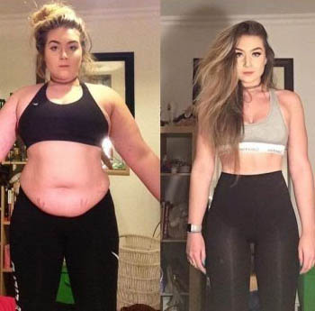
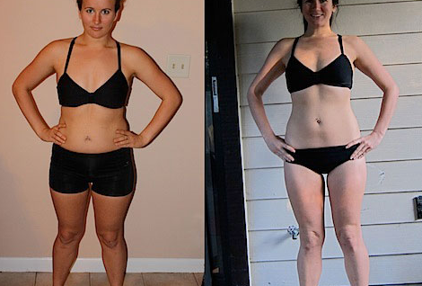

Se li bevi, puoi perdere anche 17 kg in una settimana. I nutrizionisti vogliono vietare queste gocce! [AGGIORNAMENTO]
Di questo si parla TV: "Ho perso 13 kg in 2 settimane. I nutrizionisti vogliono vietare queste gocce"
 14 commenti
14 commenti
Gli scienziati vanno in panico: "Queste gocce bruciano il grasso così rapidamente che possono portare all'anoressia". Il detentore del record ha perso 43 kg!
Sappiamo che attenersi a dieta ed eserci regolari non è facile, ma di regola questo è l'unico modo per sbarazzarsi dei chili in più. Questo è il motivo per cui spesso non crediamo nei mezzi miracolosi oltre 30 lettori hanno scritto del nuovo metodo di perdere peso in 14 giorni, quindi abbiamo dovuto scoprire cosa stava succedendo.
Funziona per le donne di tutte le età.
Camila, una scienziata culturale di 27 anni, scrive: "Ho perso 13 kg in 2 settimane. Questo è più che in tutto l'anno ! Ogni mattina guardavo i cambiamenti nello specchio, è semplicemente fantastico."
Abbiamo imparato che tipo di componente miracoloso ha causato un tale rumore.
Si è scoperto che alta concentrazione di canapa in combinazione con estratti di frutta esotica e complesso di vitamine, viene venduto in Italia sotto il marchio .
Il supplemento fa parte di un sistema di combustione dei grassi a tre fasi.
A proposito di ha scritto il più grande quotidiano: "Diciamo NO alla fame! aiuta a perdere peso, adesso anche ai citadini dell'Italia."
L'effetto può essere visto fin dai primi giorni di utilizzo e, dopo diverse settimane di ricezione, i risultati hanno superato ogni aspettativa - ci sono stati casi di perdita di peso di 18 chili in meno di un mese!
Perdita di peso scioccante. Una madre di tre bambini ha perso più di 30 chilogrammi.

Barbara, 47 anni
Ho cresciuto tre figli. Pesavo più di 100 chili. Chi non ha figli, non capirà. Il corpo sta cambiando ed ero sicuro che rimarrà così per sempre. Inoltre, non ho praticato sport. Non ho intenzione di correre in casa come una pazza: l'età non è la stessa. Ho acquistato per la prima volta per la figlia maggiore È rimasto solo un pacchetto, perché ha perso rapidamente peso. Ho provato queste gocce e in una settimana il mio peso è diminuito di 8 kg. Ho ordinato rapidamente altri 3 pacchetti, ma alla fine non li ho usati perché avevo perso peso in due settimane. In totale, grazie a queste gocce, ho perso peso più di 30 kg.
Nutrizionista: "Il grasso si scioglie a vista d'occio!"
Abbiamo chiesto l'opinione di un famoso nutrizionista. Pazienti dalla clinica di "Fit Medicine". L'esperto conferma le possibilità di questo supplemento.
Durante una formazione di due mesi presso l'Università di Rotterdam, il nostro gruppo di stupendi ha testato l'azione dell'estratto altamente concentrato di canapa e altri ingredienti attivi nelle gocce di .
Tutto è stato registrato con una fotocamera speciale per 3 settimane. L'effetto e statto sbalorditivo. Il grasso si e' dissolto letteralmente!

L'intervistato rivela il segreto dell'azione dell'estratto di canapa:
"Prestate attenzione a come il corpo reagisce all'estratto di cannabis - è una fonte di un'enorme di vitamine e minerali, che ti carica di energia e di buon umore per l'intera giornata.Grazie al alto contenuto di acidi grassi omega-3, tra cui potassio, magnesio, fosforo, zinco e fibre, l'estratto naturale di cannabis contribuisce alla rapida saturazione e scomposizione del grasso sottocutaneo profondo. Tutto il liquido in eccesso viene scaricato e i volumi sono esauriti. Migliora anche le condizioni e il colore della pelle, perché andare tutte le scorie e le tossine".
"La maggior parte dei clienti torna per il prossimo pacchetto"
In Italia, è ora in forte espansione nelle vendite, il primo bio-integratore basato su un estratto di canapa altamente concentrato che non causa un effetto psicoattivo. Il produttore si lamenta che tale popolarità lo ha colto di sorpresa. "Sapevamo che funzionava, tutte le celebrità lo usano in occidente, ma non sapevamo che lo strumento avrebbe suscitato tanto scalpore nel mercato italiano. Si è scoperto che il prodotto era letteralmente finito. Abbiamo diversi pacchetti, siamo in attesa di prossima consegna".
Gli effetti straordinari per snellita con l'aiuto dei estratti di canapa sono già ben noti nel mondo della moda. Si dice che ordinato nella speranza di un ritorno... licenziati principali con uno dei canali. «Non posso confermare o smentire, è un segreto commerciale» - ha spiegato il costruttore.
Dov'è il posto migliore per comprare per non cascare in truffe?
L'unico posto in cui è possibile acquistare la certificazione è il sito Web del produttore e la contraffazione può essere trovata su Ali.
Il link alla pagina del produttore è elencata sotto, attualmente gli ultimi prodotti sono venduti a prezzi scontati.
Probabilmente saranno esauriti entro mezz'ora.
Attenzione ai falsi!
Il negozio dei prodotti originali, di cui abbiamo parlato:
È meglio ordinare un corso (3-5 pacchetti), quindi i pacchetti aggiuntivi usciranno ancora più economici o gratuitamente.
Commenti del lettore
Corado e io abbiamo ordinato queste gocce. È possibile accelerare il processo di perdita di peso, prendendo, ad esempio, un corso di 5 pacchi? Per favore aiuto!
risposta Mi piace! 7 minuti fa
Secondo lo studio, l'estratto di cannabis nel giusto dosaggio e in giusta concentrazione in combinazione con altri ingredienti attivi delle gocce di aiuta davvero a perdere peso. Ecco il link se qualcuno se diffida dell'efficenza.
risposta Mi piace! 13 minuti fa

Uso le gocce da 14 giorni, ho già perso solo 3,7 kg. Ma non ho piu' affanno, quando salgo le scale
risposta Mi piace! 46 minuti fa

Rosa, ah, vedi, ora hai un culo sodo, davvero fantastico
risposta Mi piace! 25 minuti fa

Mia mamma ha iniziato a prendere gocce circa una settimana fa, ha perso 2 chili.. Penso che sia tutto a posto.
risposta polub Circa un'ora fa

Ho acquistato quando valeva ancora : link al corso che mi ha aiutato a perdere peso.
risposta Mi piace! 2 ore fa
Sì, lo uso da più di 7 mesi, ordino direttamente dei corsi. I miei risultati:
risposta Mi piace! 1 ora fa

Haha, lascia che le donne grasse perdano peso, e l'uomo giusto dovrebbe avere un po' di pancetta . Haha, perdere peso per i deboli , che si non vedolo il loro pene dalla pancia
risposta Mi piace! 2 ore fa
Enrico, mettilo nel culo. e torna negli anni ottanta con i tuoi stupidi discorsi
risposta Mi piace! 2 ore fa
Per favore, non iniziamo con le polemniche torniamo alla discussione sull'estratto di canapa e sulla perdita di peso.
risposta Mi piace! 2 ore fa

Come al solito, ci sarà un coglione. Ad esempio,io ho perso 15 chili in un mese e i miei killogrammi non sono tornati. È vero, mi rammarico che ho ordinato solo il corso mensile, vorrei perdere più peso, ma l'oferta è quasi finita (((
risposta Mi piace! 2 ore fa
Ho dimenticato di aggiungere una foto. Ho perso tutta la ciccia della pancia in una settimana:
risposta Mi piace! 2 ore fa

Buon pomeriggio, mi scuso in anticipo per gli errori nel testo, vivo a Chicago da 16 anni. Ho usato nel , quando nessuno sapeva di queste gocce in Italia, e ho avuto risultati eccellenti. Compra e non pensare a niente , le gocce sono molto popolari negli Stati Uniti.

risposta Mi piace! 2 ore fa


Il personale editoriale avverte:
Solo l'originale è così efficace!
I lettori ci parlano di falsi, quindi fai attenzione! Solo qui puoi trovare la vera , a cui ci riferiamo in questo articolo. Attenzione ai falsi cinesi!